PASSO A PASSO TIA PORTAL V20
Explicação de como fazer um projeto no TIA Portal
Esse software é utilizado para a programação, configuração e monitoramento de sistemas. Aqui temos um projeto de automação, configurando a CPU, criar variáveis e desenvolver programas de linguagem Ladder utilizando contatos NA, NF e temporizador TON e TOF.
Criação do projeto
Ao iniciar, criei um novo projeto utilizando a opção Create New Project. Nessa etapa foi onde pude definir o nome, onde será armazenado e demais informações. Essa é a primeira coisa a fazer, é uma etapa importante.
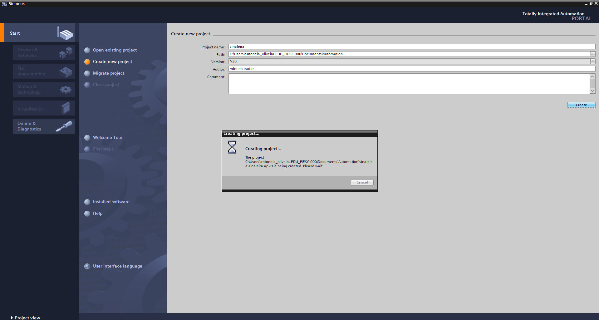
Primeiros passos do projeto
Após criar, abre uma tela chamada First Steps, que apresenta as configurações do sistema. Nessa etapa, foi selecionada a opção Devices & Networks, que permite adicionar o controlador ao projeto.
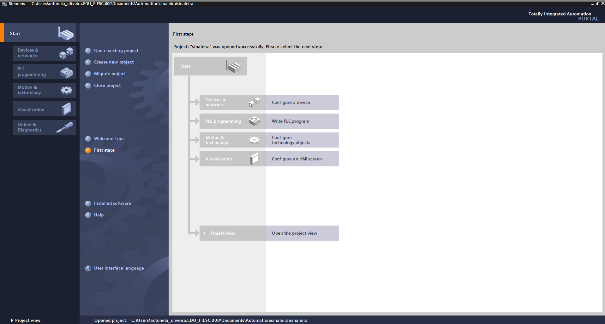
Adição do dispositivo (CLP)
Depois, foi necessário a escolha da CPU a ser utilizada. Sendo a família Siemens - 1200 e a CPU 1215C DC/DC/DC. A CPU é o principal componente do CLP. Permitindo receber sinais das entradas, executa o programa criado e envia comandos. Tudo o que acontece no sistema passa pela CPU. E porquê a escolha dessa em específico? Escolhemos essa CPU, pois esse modelo é utilizado no laboratório do Senai, desse modo, os projetos desenvolvidos podem ser utilizados nos equipamentos.
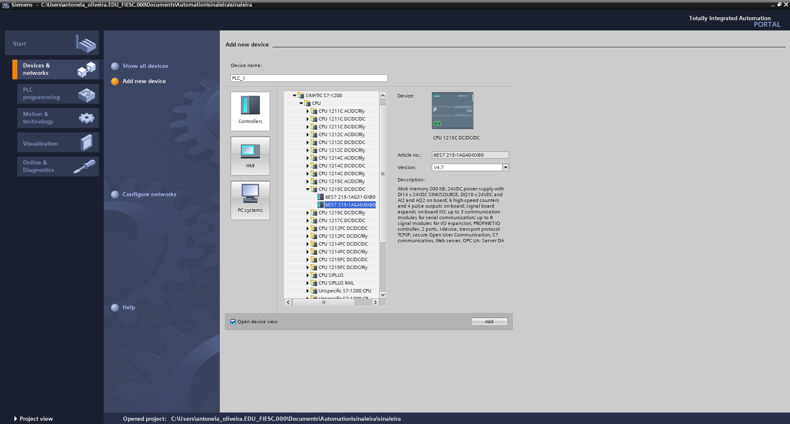
Resumo das configurações de segurança
Após adicionar o CLP ao projeto, o TIA Portal apresentou algumas telas de configuração de segurança. As três primeiras etapas foram ajustadas conforme a necessidade do projeto:
- Proteção dos dados da CPU: essa opção foi deixada desativada, pois o projeto foi desenvolvido apenas para estudo e não precisava de proteção especial dos dados do CLP.
- Comunicação entre computador e CLP: a opção de comunicação somente segura permaneceu desmarcada, facilitando a conexão entre o computador e o CLP durante a programação e os testes.
- Proteção de acesso ao CLP: foi selecionada a opção Disable access control, desativando o controle de acesso para evitar a necessidade de criar usuários e permissões durante o desenvolvimento do projeto.
Depois dessas etapas, o TIA Portal exibiu as telas de Configuração do administrador, Acesso sem autenticação (Anonymous User) e Níveis de acesso. Como o controle de acesso já havia sido desativado anteriormente, não foi necessário
alterar essas configurações, que permaneceram com os valores padrão do sistema.
Por fim, o software apresentou a tela Overview, que reúne um resumo de todas as configurações realizadas. Após conferir que as informações estavam corretas, foi clicado em Finish para concluir a configuração do dispositivo.
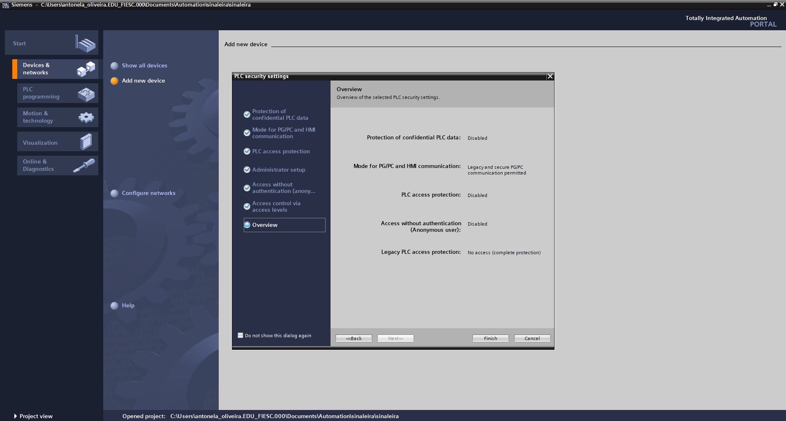
Configuração do CLP Siemens S7-1200 no TIA Portal
A imagem mostra o TIA Portal com a configuração de um CLP Siemens S7-1200. Nela, aparecem a CPU, suas entradas e saídas digitais e os componentes configurados no projeto.
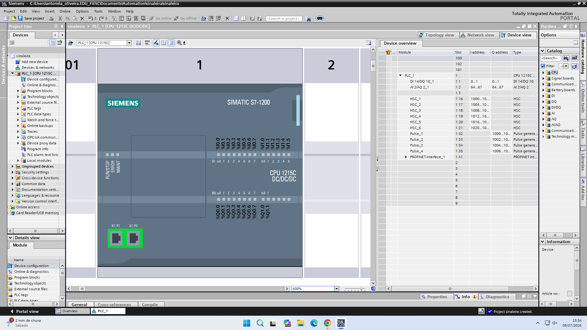
Tabela de variáveis (Default tag table)
A tabela de variáveis é utilizada para cadastrar e organizar as variáveis do CLP, permitindo atribuir nomes aos endereços e tornando a programação mais organizada e fácil de compreender.
- I (Input – Entrada): Representa os sinais que chegam ao CLP. Ao criar uma variável de entrada, é definido um nome e um endereço (ex.: %I0.0) para identificar dispositivos como botões e sensores.
- Q (Output – Saída): Representa os sinais enviados pelo CLP. Ao criar uma variável de saída, é definido um nome e um endereço (ex.: %Q0.0) para controlar dispositivos como lâmpadas, motores e relés.
- M (Memory – Memória): Representa a memória interna do CLP. Ao criar uma variável de memória, é definido um nome e um endereço (ex.: %M0.0) para armazenar informações utilizadas pela lógica do programa.
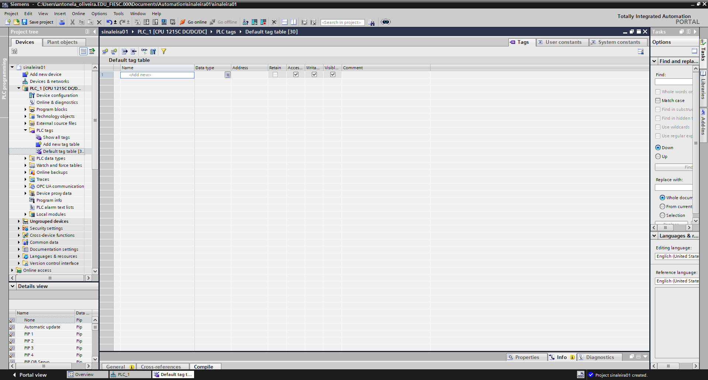
Ambiente de programação (Main [OB1])
O TIA Portal possui diferentes blocos de programação, como OB (Organization Block), FB (Function Block), FC (Function) e DB (Data Block), cada um com uma função específica.
Neste projeto, será utilizado o Main [OB1], que é o bloco principal onde a lógica do programa é desenvolvida e executada. Esta é a tela principal onde a programação do CLP é
desenvolvida.
- No centro da tela (Networks): É o local onde a lógica do programa é criada em linguagem Ladder. Cada Network representa uma parte da programação, organizada em linhas.
- Do lado direito (Instructions): É a biblioteca de instruções do TIA Portal. Nela estão os blocos utilizados na programação, como contatos, bobinas, temporizadores, contadores e outras funções.
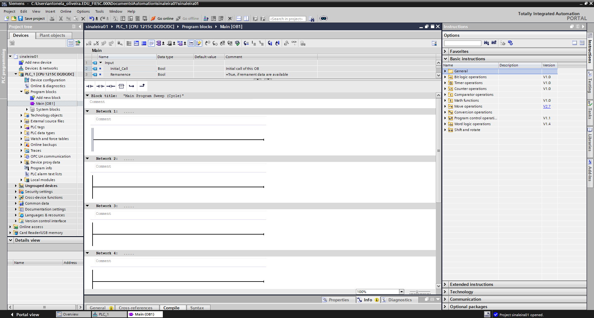
Componentes Básicos da Linguagem Ladder:
- NA (Normalmente Aberto): É um contato que fica aberto no estado de repouso, sem deixar a energia ou sinal lógico passar. Ele só fecha e permite a passagem quando é acionado.
- NF (Normalmente Fechado): É um contato que fica fechado no estado de repouso, deixando a energia ou sinal lógico passar livremente. Ele só abre e corta a passagem quando é acionado.
- Bobina: É a saída ou o comando final do circuito (como acionar um motor, ligar uma lâmpada ou abrir uma válvula). Ela é energizada quando a combinação de contatos NA e NF permite que o sinal chegue até ela.
Além dos contatos NA, NF e da bobina, o TIA Portal possui outros blocos, como temporizadores, contadores e comparadores, que permitem criar lógicas de programação mais completas e eficientes.
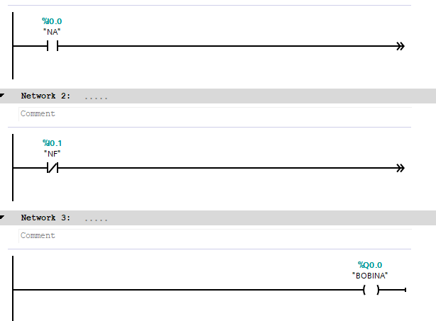
Temporizadores
- TP (Pulse Timer): É um temporizador de pulso. Quando acionado, mantém a saída ligada por um tempo previamente definido e, ao final desse tempo, a desliga automaticamente, independentemente de a entrada continuar acionada.
- TON (On-Delay Timer): É um temporizador com retardo na energização. Após a entrada ser acionada, ele aguarda o tempo configurado antes de ligar a saída.
- TOF (Off-Delay Timer): É um temporizador com retardo na desenergização. Quando a entrada é desligada, a saída permanece ligada pelo tempo configurado e só depois é desativada.
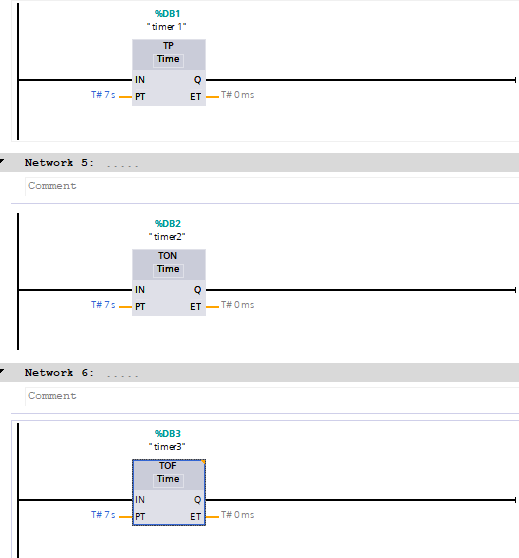
Contadores
- CTU (Count Up): É um contador crescente. A cada pulso recebido na entrada, o valor da contagem é incrementado em uma unidade. Quando a contagem atinge o valor pré-definido, sua saída é ativada.
- CTD (Count Down): É um contador decrescente. Ele inicia com um valor definido e, a cada pulso recebido, reduz a contagem em uma unidade. Quando a contagem chega a zero, sua saída é ativada.
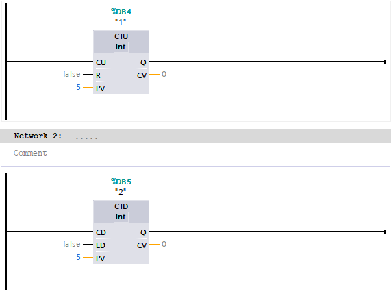
MOVE (Move)
O MOVE é uma instrução utilizada para copiar um valor de uma variável ou constante para outra variável. Ele não altera o valor de origem, apenas transfere a informação para o destino.
- IN (Entrada): Valor que será copiado.
- OUT (Saída): Variável que receberá o valor.
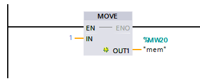
Blocos de comparação
No TIA Portal, os blocos de comparação são usados para comparar valores dentro do programa do CLP. Eles verificam, por exemplo, se um valor é:
1. == (Igual a) - Condição: A energia passa se "mem" for exatamente igual a 1.
2. <> (Diferente de) - Condição: A energia passa se "mem" for diferente de 1.
3. >= (Maior ou igual a) - Condição: A energia passa se "mem" for maior ou igual a 1.
4. <= (Menor ou igual a) - Condição: A energia passa se "mem" for menor ou igual a 1.
5. > (Maior que) - Condição: A energia passa se "mem" for estritamente maior que 1.
6. < (Menor que) - Condição: A energia passa se "mem" for estritamente menor que 1.
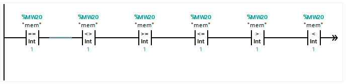
Prática no laboratório
Sinaleira
Projeto feito em ladder junto ao clp
Sensor Capacitivo
É um dispositivo eletrônico utilizado para detectar a presença ou aproximação de objetos, por meio da variação da capacitância de um campo elétrico gerado pelo próprio sensor. Ele pode detectar materiais metálicos e não metálicos, como plástico, madeira, vidro, líquidos e até o corpo humano.
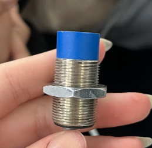
Sensor Indutivo
É um dispositivo eletrônico utilizado para detectar a presença ou aproximação de objetos metálicos, sem necessidade de contato físico. Ele funciona por meio de um campo eletromagnético gerado por uma bobina. Quando um objeto metálico se aproxima, ocorre uma alteração nesse campo, que é identificada pelo circuito do sensor.